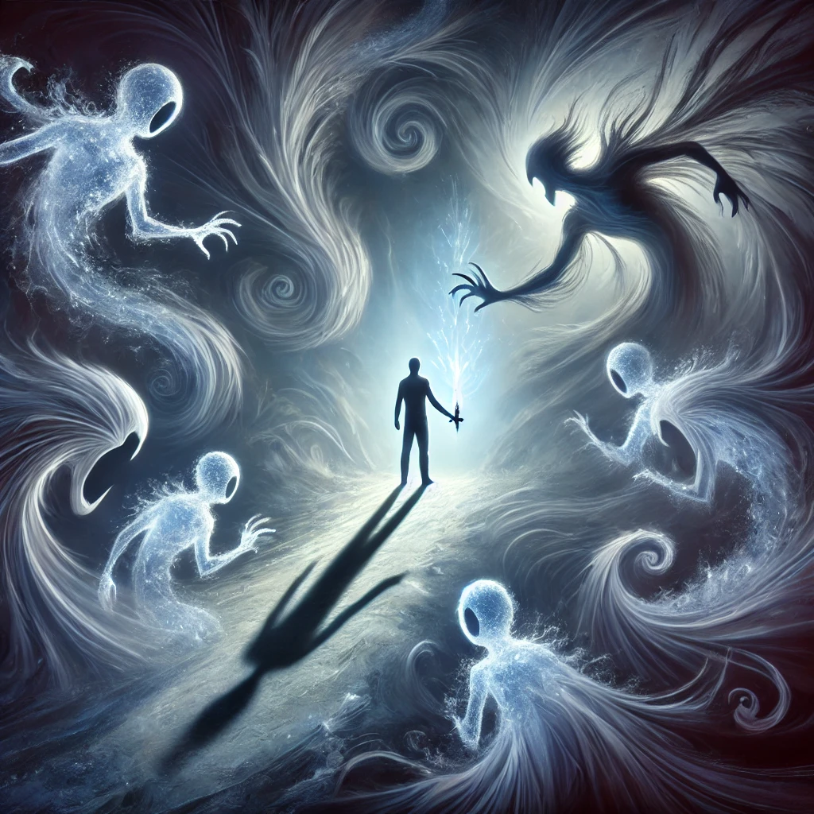

The shadows swirl around you, whispering your fears, regrets, and hidden truths. They seem alive, reaching out to envelop you in their cold embrace. The crystalline dagger in your hand vibrates gently, its glow steady, as if urging you to make a choice.
Instead of striking or fleeing, you lower the blade. Closing your eyes, you take a deep breath and step into the shadows. Their icy tendrils wrap around you, yet you stand firm, choosing not to resist. Slowly, the whispers soften, transforming into voices of understanding and acceptance.
The shadows reshape, no longer monstrous but familiar. You see parts of yourself you once rejected—painful memories, unspoken fears, and forgotten dreams. A voice, calm and kind, resonates within:
“The shadow is not your enemy. It is the part of you longing to be seen, understood, and integrated. To embrace it is to become whole.”
The shadows fade into light, and you feel a deep sense of peace and clarity. The dagger’s glow dims, its purpose fulfilled.

What will you do next?